14 Danger Zone
You can usually anticipate and enumerate most of the ways your model will fail to work in advance. Yet the problems you’ll encounter in practice are usually exactly one of those things you knew to watch out for, but failed to.
~ Andrej Karpathy (supposedly)
When it comes to conducting models in data science, a lot can go wrong, and in many cases it’s easy to get lost in the weeds and lose sight of the bigger picture. In this chapter, we’ll discuss some common pitfalls that can sneak up on you when you’re working on a data science project, and others that just came to mind while we were thinking about it. The topics are based on things we’ve commonly seen in consulting across many academic disciplines and industries, and here we attempt to provide a very general overview. That said, it is by no means exhaustive and may miss bigger issues in some domains. The following groups of focus attempt to reflect the content of the book as it was presented.
14.1 Linear Models and Related Statistical Endeavors
Statistical models are a powerful tool for understanding the relationships between variables in a dataset. They are also excellent at helping us to understand the uncertainty in our data and the aspects of the model we wish to estimate. However, there are many ways in which statistical models can be misused.
14.1.1 Statistical significance
One of the most common mistakes when conducting statistical linear models is simply relying too heavily on the statistical result. Statistical significance is simply not enough to determine feature importance or model performance. When complex statistical models are applied to small data, the results are typically very noisy and statistical significance can be misleading. This also means that ‘big’ effects can be a reflection of that noise, rather than something meaningful.
Focusing on statistical significance can lead you down other dangerous paths. For example, relying on statistical tests of assumptions instead of visualizations or practical metrics can lead you to believe that your model is valid when it is not. Using a statistical testing approach to select features can often result in incorrect choices about feature contributions, as well as poorer models.
A related issue is p-hacking, which occurs when you try many different models, features, or other aspects of the model until you find one that is statistically significant. This is a problem because it can lead to spurious results, and can make it difficult to generalize the results of the model (overfitting). It also means you ignored null results, which can be just as informative as significant ones, a problem known as the file drawer problem.
14.1.2 Ignoring complexity
While techniques like standard linear/logistic regression and GLMs are valid and very useful, for many modeling contexts they may be too simplified to capture the complexity of the data generating process. This can lead to underfitting, where the model is too simple to capture the underlying structure of the data.
On the other side of the coin, many applications of statistical models ignore model assessment on a separate dataset, which can lead to overfitting. This makes generalization of statistical and other results more problematic. Such applications typically use a single model as well, and so may not be indicative of the best approach that could be taken.
14.1.3 Using outdated techniques
If you wanted to go on a road trip, would you prefer a 1973 Ford Pinto or a Tesla Model S? If you want to browse the web, would you prefer to use a computer from the 90s and 56k modem, or a modern laptop with a high-speed internet connection? In both cases, you could potentially get to your destination or browse the web, but the experience would be much different, and you would likely have a clear preference1. The same goes with the models you use for your data analysis.
This is not specific to the statistical linear modeling realm, but there are many applications of statistical models that rely on outdated techniques, metrics, or other tools that solve problems that don’t exist anymore. For example, using stepwise/best subset regression for feature selection is not really viable when more principled approaches like the lasso are available. Likewise, we can’t really think of a case where something like MANOVA/discriminant function analysis would provide the best answer to a data problem, or where a pseudo-R2 would be a metric that would help us understand a model better or make a decision about it.
Statistical analysis has been around a long time, and many of the techniques that have been developed are still valid, useful, and very powerful. But some reflect the limitations of the time in which they were developed. Others were an attempt to take something that was straightforward for simpler settings (e.g. linear regression) and apply to settings where it doesn’t make sense (nonlinear, non-gaussian, etc.). Even when still valid, there may be better alternatives available now.
14.1.4 Simpler is not necessarily more interpretable
Standard linear models are often used because of their interpretability, but in many of these modeling situations, interpretability can be difficult to obtain without using the same amount of effort one would for more complex models. Many statistical/linear models employ interactions, or nonlinear feature-target relationships (e.g. GLM/GAMs). If your goal is interpretability, these settings can be as difficult to interpret as features in a random forest. They still have the added benefit of more reliable uncertainty estimation, but you should not assume you will have a result as simple as a coefficient in a linear regression just because you didn’t use a deep learning model.
14.1.5 Model comparison
When comparing models, especially in the statistical modeling realm, many will use a statistical test to compare them. An example would be using an ANOVA or likelihood ratio test to compare a model with and without interactions. Unfortunately this doesn’t actually tell us how the models perform under realistic settings, and it comes with the usual statistical significance issues, like using an arbitrary threshold for claiming statistical significance. You could basically claim that one terrible model is statistically better than another terrible model, but there isn’t much value in that.
Some like to look at R2 to compare models2, but it has a lot of problems. People think it’s more interpretable than other options, yet there is no value of ‘good’ you can universally apply, even in very similar scenarios. It can arbitrarily increase with the number of features whether they are actually predictive or not, and it doesn’t tell you how well the model will perform on new data. It can also simply reflect that you have time-series data, as you are just witnessing spurious correlations over time. In short, you can use it to get a sense of how your predictions correlate with the target, but that is fairly limited.
The following plot shows 250 simulations with a sample size of 500 and 250 completely meaningless features. The R2 values would all suggest the model is somewhat useful with an average of .5. The adjusted R^2 values average zero, which is correct, but they can only average that by being negative, which is a meaningless value. Many adjusted values still get into areas that would be viable for some domains.
Other commonly used metrics, like AIC, might be better in theory, but they approximate the model selection one would get through cross-validation, so why not just do the cross-validation? Furthermore, as long as you are using those metrics only on the training data, you really aren’t getting a good idea of how the model will generalize (Section 9.4).
14.2 Estimation
14.2.1 What if I just tweak this…
From traditional statistical models to deep learning, the more you know about the underlying modeling process, the more apt you are to tweak some aspect of the model to try and improve performance. When you start thinking about changing optimizer options, link/activation functions, learning rates, etc., you can easily get lost in the weeds. This would be okay if you knew ahead of time it would make a big difference. However, in many, or maybe even most cases, this sort of tweaking doesn’t improve model results, or there are ways to not have to make the choice in the first place. More to the point, if this sort of estimation parameter tweaking does make a notable difference, that probably means you have a bigger problem with your model architecture or data.
Unless you are using a bleeding edge technique, much of the work has been done for you by folks who had a lot more time to work on these aspects of the model. As such, spending a lot of time trying to decide on ML vs. REML, which variant of an Adam optimizer to use, learning rate of 1e-3 vs. 1e-4, 5 vs. 10 fold CV, or whether you should use ReLU, GELU, or Swish activations, a dropout rate of .1 or .2, etc., a lot of these choices won’t matter, or shouldn’t if more important aspects of your model and data are in order.
14.2.2 Everything is fine
There is a flip side to the previous point, and that is that many assume that the default settings for complex models are good enough. We all do this when venturing into the unknown, but we do so at our own risk. Many of the more complex models have defaults geared toward a ‘just works’ setting rather than a ‘production’ setting. For example, the default number of boosting rounds for xgboost will rarely be adequate3.
14.2.3 Just bootstrap it!
When it comes to uncertainty estimation, many common modeling tools leave that to the user, and when the developers are pressed on how to get uncertainty estimates, they often will suggest to just bootstrap the result. While the bootstrap is a powerful tool for inference, it isn’t appropriate just because you decide to use it. The suggestion to use bootstrapping is often made in the context of a complex modeling situation where it would be very (prohibitively) computationally expensive, and in other cases the properties of the results are not well understood. Other methods of prediction inference, such as conformal prediction, may be better suited to the task. In general, if a package developer suggests you bootstrap because their package doesn’t have any means of uncertainty estimation, you should be cautious. If it’s the obvious option, it should be included in the package.
While we’re at it, another common suggestion om <: is to use a quantile regression (Section 8.5) approach to get prediction intervals. This is a valid option in some cases, but it’s not clear how appropriate it is for complex models or for certain types of outcomes, and modeling tools for predicting quantiles are not typically available for a given model implementation.
14.3 Machine Learning
14.3.1 General ML modeling issues
We see a lot of issues with machine learning approaches, and many of them are the same as those that come up with statistical models, but some are more unique to the machine learning world. A starting point is that many forget to create a baseline model, and instead jump right into a complicated model. This is a problem because it is hard to improve performance if you don’t know what a good baseline score is. So create that baseline model and iterate from there.
A related point is that many will jump into machine learning models without fully investigating the data. Standard exploratory data analysis (EDA) is a prerequisite for any modeling, and can go a long way toward saving time and effort in the modeling process. It’s here you’ll find problematic cases and features, and can explore ways to deal with it.
When choosing a model or set of models, one should have a valid reason for the choice. Some less stellar reasons include using a model just because it seems popular, or just because it’s the only one you know. In addition, as mentioned with other types of models, you want to avoid using older methods that really don’t perform well in most situations compared to others4.
14.3.2 Classification
Machine learning is not synonymous with a classification problem, but this point seems to be lost on many. As an example, many will split their target just so they can do classification, when the target is a more expressive continuous variable. This is a problem because you are unnecessarily diminishing the reliability of the target score, and losing information about it. This can lead to a well known statistical issue - attenuation of the correlation between variables.
import numpy as np
import pandas as pd
def simulate_binarize(
N = 1000,
correlation = .5,
num_simulations = 100,
bin_y_only = False
):
correlations = []
for i in range(num_simulations):
# Simulate two variables with the given correlation
xy = np.random.multivariate_normal(
mean = [0, 0],
cov = [[1, correlation], [correlation, 1]],
size = N
)
# binarize on median split
if bin_y_only:
x_bin = xy[:, 0]
else:
x_bin = np.where(xy[:, 0] >= np.median(xy[:, 0]), 1, 0)
y_bin = np.where(xy[:, 1] >= np.median(xy[:, 1]), 1, 0)
raw_correlation = np.corrcoef(xy[:, 0], xy[:, 1])[0, 1]
binarized_correlation = np.corrcoef(x_bin, y_bin)[0, 1]
correlations.append({
'sim': i,
'raw_correlation': raw_correlation,
'binarized_correlation': binarized_correlation
})
cors = pd.DataFrame(correlations)
return cors
simulate_binarize(correlation = .25, num_simulations = 5)simulate_binarize = function(
N = 1000,
correlation = .5,
num_simulations = 100,
bin_y_only = FALSE
) {
correlations = list()
for (i in 1:num_simulations) {
# Simulate two variables with the given correlation
xy = MASS::mvrnorm(
n = N,
mu = c(0, 0),
Sigma = matrix(c(1, correlation, correlation, 1),
nrow = 2),
empirical = FALSE
)
# binarize on median split
if (bin_y_only) {
x_bin = xy[, 1]
} else {
x_bin = ifelse(xy[, 1] >= median(xy[, 1]), 1, 0)
}
y_bin = ifelse(xy[, 2] >= median(xy[, 2]), 1, 0)
raw_correlation = cor(xy[, 1], xy[, 2])
binarized_correlation = cor(x_bin, y_bin)
correlations[[i]] = tibble(
sim = i,
raw_correlation,
binarized_correlation
)
}
cors = bind_rows(correlations)
cors
}
simulate_binarize(correlation = .25, num_simulations = 5)The following plot shows the case where we only binarize the target variable for 500 simulations. The true correlation between the raw and binarized variables is .25, .5, or .75, but the correlation in the binarized case is notably less. This is because the binarization process has removed the correlation between the variables.

Common issues with ML classification don’t end here however. Another problem is that many will use a simple .5 cutoff for binary classification, when it is probably not the best choice in most classification settings. Related to this, many only focus on accuracy as a metric for performance. Others are more useful in many situations, or just add more information to assess the model. Each metric has its own pros and cons, so you should evaluate your model’s performance with a suite of metrics.
14.3.3 Ignoring uncertainty
It is very common in ML practice to ignore uncertainty in your predictions or metrics. This is a problem because there is always uncertainty, and acknowledging that it exists can be helpful for mitigating performance expectations. This is especially true when you are using a model in a production setting, where the model’s performance can have real-world consequences.
It is often computationally difficult to get uncertainty estimates for many of the black-box techniques that are popular in ML. Some might suggest that there is enough data such that uncertainty is not needed, but this would have to be demonstrated in some fashion, and there is always increased uncertainty for prediction on new data. In general, there are ways to get uncertainty estimates for these models, e.g., bootstrapping, conformal prediction, and simulation, and it is often worth the effort to do so.
14.3.4 Hyperfocus on feature importance
Researchers and businesses often have questions about which features in an ML model are important. Yet this can be a difficult question to answer, and the answer is often not practically useful. For example, most models used in ML are going to have interactions, so the importance of a feature is going to be dependent on the other features in the model. If you can’t disentangle the effects of one feature from another, where either feature may or may not be important on their own, or maybe neither is predictive except in the presence of the other, then trying to talk about a single feature’s relative worth is often a misguided endeavor, even if you use an importance metric that purports to account for the interaction.
Even if we can deem a variable ‘important’, this doesn’t imply a causal relationship, and it doesn’t mean that the variable is the best of the features you have. In addition, other metrics, which might be just as valid, may provide a different rank ordering of importance.
What’s more, just because an importance metric may deem a feature as not important, that doesn’t mean it has no effect on the target. It may be that the feature is correlated with other features that are more important, and so the importance metric is just reflecting that. It may also just mean that the importance metric is not well suited to assessing that particular feature’s contribution.
The reality is that multiple valid measures of importance can come to different conclusions about the relative importance of a feature, even within the same model setting. One should be very cautious in how they interpret these.
14.3.5 Other common pitfalls
A few other common pitfalls in ML modeling include:
Forgetting that the data is more important than your modeling technique. You will almost always get more mileage out of improving your data than you will out of improving your model.
Data Leakage: Letting training data leak into the test set. As a simple example, consider if we use random validation splits with time-based data. This would allow the model to train with future data it will ultimately be assessed on. That may be an obvious example, but there are many more subtle ways this can happen. Data leakage gives your model an unfair advantage when it is time for testing, leading you to believe that your model is doing better than it really is.
Forgetting you will ultimately need to be able to explain your model to someone else. The only good model is a useful one; if you can’t explain it to someone, you can’t expect others to trust you with it or your results.
Assuming that grid search is good enough for all or even most cases. Not only is it computationally expensive, but you can easily miss valid tuning parameter values that are outside of the grid. Many other methods are available that more efficiently search the space and are as easy to implement.
Thinking deep learning will solve all your problems. If you are dealing with standard, tabular data, i.e. very noisy, deep learning will often just increase computational complexity and time, with no guarantee of increased performance. Hopefully this will change in the future, but for now, you should not expect major performance gains.
Comparing models on different datasets. If you run different models on separate data, there is no objective way to compare them. As an example, the accuracy may be higher on one dataset just because the baseline rate is much higher.
The list goes on. In short, many of the pitfalls in ML modeling are the same as those in statistical modeling, but there are some unique to the ML world. The most important thing to remember is that due diligence is key when conducting any modeling exercise, and ML doesn’t change that. You should always be able to explain your model and code to someone else, that you should always be able to defend your choices, and that you should always be able to defend your choices.
14.4 Data
When it comes to data, plenty can go wrong before even starting with any modeling attempt. Let’s take a look at some issues that can regularly arise.
14.4.1 Transformations
Many models will fail miserably without some sort of scaling or transformation of the data. A few techniques, like tree-based approaches, do not benefit, but practically all others do. At the very least, models will converge faster and possibly be more interpretable. You should not use transformations that would lose the expressivity of the data, because as we noted with binarization (Section 14.3.2), some can do more harm than good. But you should always consider the need for transformations, and not just assume that the data is in a form that is ready for modeling.
14.4.2 Simple imputation techniques
Imputation may be required when you have missing data, but it can be done in ways that don’t help your model. Simple imputation techniques, like using the mean or modal category, can produce faulty, or at best, noisier, results. First you should consider why you want to keep a feature that doesn’t have a lot of data - do you even trust the values that are present? If you really need to impute, use an actual model to do so, but recognize that the resulting value has uncertainty associated with it. There are practical problems with implementing multiple-imputation Section 13.3.4, so there is no free lunch when estimating that uncertainty. But at least having a better imputation model will provide a better guess than a mean, and still better is to use a model that would handle the missing values natively, like tree-based methods that can split on the missingness.
14.4.3 Outliers are real!
One common practice in modeling is to drop or modify values considered as “outliers”. However, extreme values in the target variable are often a natural part of the data. Assuming there is no actual error in recording them, often, a simple transformation can address the issue. If extremes persist after modeling, it indicates that the model is unable to capture the underlying data structure, rather than an inherent problem with the data itself. Additionally, even values that may not appear extreme can still have large residuals, so it’s important not to solely focus on the most extreme raw values.
In terms of features, extreme values can cause strange effects, but often they reflect a data problem (e.g. incorrect values), or can be resolved using the transformations you should already be considering. In other cases, they don’t really cause any modeling problems at all. And again, some techniques are fairly robust to feature extremes, like tree-based methods.
14.4.4 Big data isn’t always as big as you think
Consider a model setting with 100,000 samples. Is this large? Let’s say you have a rare outcome that occurs 1% of the time. This means you have 1000 samples where the outcome label you’re interested in is present. Now consider a categorical feature (A) that has four categories, and one of those categories is relatively small, say 5% of the data, or 5000 cases, and you want to interact it with another categorical feature (B), one whose categories are all equally distributed. Assuming no particular correlation between the two, you’d be down to ~1% of the data for the least category of A across the levels of B. Now if there is an actual interaction effect on the target, some of those interaction cells may have only a dozen or so positive target values. Odds are pretty good that you don’t have enough data to make a reliable estimate of the interaction effect.
Oh wait, did you want to use cross-validation also? A simple random sample approach might result in some validation sets with no positive values at all! Don’t forget that you may have already split your 100,000 samples into training and test sets, so you have even less data to start with! The following table shows the final cell count for a dataset with these properties.
The point is that it’s easy to forget that large data can get small very quickly due to class imbalance, interactions, etc. There is not much you can do about this, but you should not be surprised when these situations are not very revealing in terms of your model results.
14.5 Causal Inference
Causal inference and modeling is hard. Very hard.
14.5.1 The hard work is done before data analysis
The most important part of causal modeling is the conceptualization of the problem and the general design of the study to answer the specific questions related to that problem. You have to think very hard about the available data, what variables may be confounders, which effects may be indirect, and many other aspects of the process you want to measure. A causal model is the one you draw up, possibly before you even start collecting data, and it is the one you use to guide your data collection and ultimately your data modeling process.
14.5.2 Models can’t prove causality
Causal modeling focuses on addressing issues like confounding, selection bias, and measurement error, which can skew interpretations about cause and effect. While predictive accuracy is key in some scenarios, understanding these issues is crucial for making valid causal claims.
A common mistake in modeling is assuming that a model can prove causality. You can have a very performant model, but the model results cannot prove that one variable causes another just because it is highly predictive. There is also nothing in the estimation process that can magically extract a causal relationship even if it exists. Reality is even more complex than our models, and no model can account for every possibility. Causal modeling attempts to account for some of these possibilities, but it is limited by our own biases in thinking about a particular problem.
Predictive features in a model might suggest a causal link, act as stand-ins for one, or merely reflect spurious associations. Conversely, true causal effects of a feature may not be large, but it doesn’t mean they are unimportant. Assuming you have done the hard work of developing the causal structure beforehand, model results can provide more confidence in your ultimate causal conclusions, and that is very useful, despite lingering uncertainties.
14.5.3 Random assignment is not enough
Many believe experimental design is the gold standard for making causal claims, and it is certainly a good way to control for various aspects that can make causal claims difficult. Consider a randomized control trial (RCT) where you randomly assign people to a treatment or control group. The left panel shows the overall treatment effect, where the main effect would suggest a causal conclusion of no treatment effect. However, the right panel shows the treatment effect by another group factor, and it is clear that the treatment effect is not the same across groups.

So random assignment cannot save us from misunderstanding the causal mechanisms at play. Other issues to think about are that the treatment may be implemented poorly, participants may not be compliant, or the treatment may not even be well defined, and these are not uncommon situations. This comes back to having the causal structure understood as best you can before any analysis.
14.5.4 Ignoring causal issues
Causal modeling is concerned with things like confounding, selection bias, measurement error, reverse causality and more. These are all issues that can lead to incorrect causal conclusions. A lot of this can be ignored when predictive performance is of primary importance, and some can be ignored when we are not interested in making causal claims. But when you are interested in making causal claims, you will have some homework to learn and revisit these topics in order for your model to help you make said claims, regardless of the modeling technique you choose to implement.
14.6 Wrapping Up
Though we’ve covered many common issues in modeling here, there are plenty more ways we can trip ourselves up. The important thing to remember is that we’re all prone to making and repeating mistakes in modeling. But awareness and effort can go a long way, and we can more easily avoid these problems with practice. The main thing is to try and do better each time, and learn from any mistakes you do make.
14.6.1 The common thread
Many of the issues here are model agnostic and could creep into any modeling exercise you undertake.
14.6.2 Choose your own adventure
If you’ve made it through the previous chapters, there’s only one place to go. But you might revisit some of those in light of the common problems we’ve discussed here.
14.6.3 Additional resources
Mostly we recommend the same resources we did in the corresponding sections of the previous chapters. However, a couple others to consider are:
- Shalizi (2015) (start with the fantastic concluding comment)
- Questionable Practices in Machine Learning (Leech et al. 2024)
Granted, if it was a Pinto wagon, the choice could be more difficult.↩︎
Adjusted R2 doesn’t help, the same issues are present and it would not be any practically different than R2 except for very small data situations, where it might even be negative!↩︎
The number is actually dependent on other parameters, like whether early stopping is used, the number of classes, etc.↩︎
As we mentioned in the statistical section, many older methods are still valid and useful, but it’s not clear what would be gained by using things like a standard support vector machine or hidden markov model related to more recently developed or other techniques that have shown more flexibility.↩︎